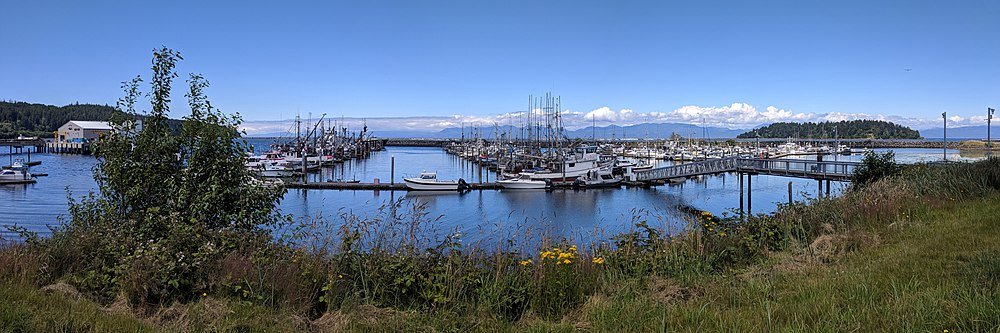

September 10, 2018
Hey internet,
This is the beginning of my blog for my Pyschology class. We're supposed to keep a journal of our everyday life.
We get extra credit if we do more that just "write it down."
Anyway, today has been hectic, more hectic than usual. Kai kept trying to run away while we were going to school. I swear that kid is going to get me in so much trouble
Dad keeps talking about the renewing of a tradition. Its been 70+ years
since we were able to celebrate it. I guess I'm not sure how I feel about it yet. But I guess I have to know more about it...Will post updates.
Before I forget, we are supossed to have an image after our entry.
